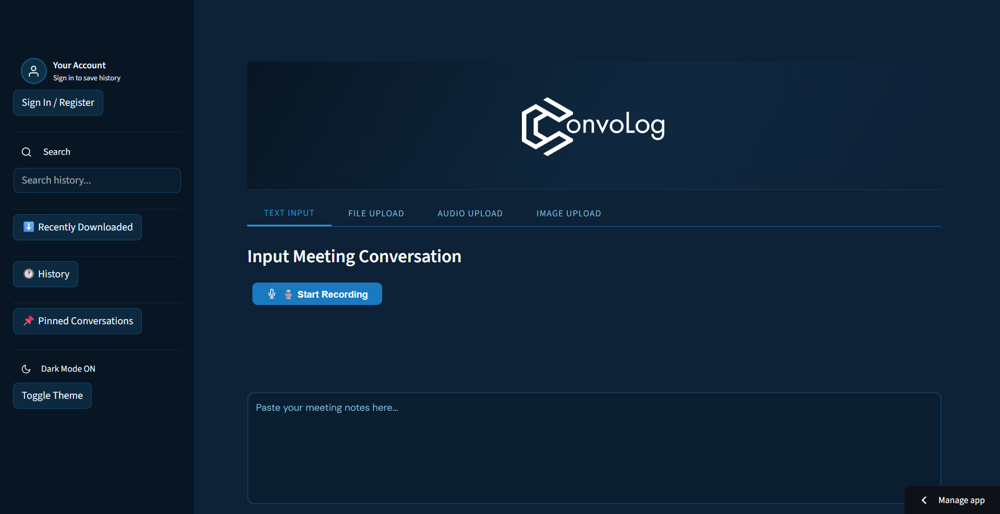
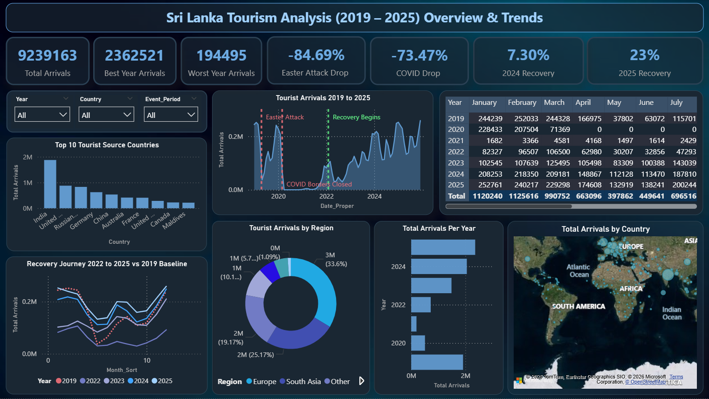
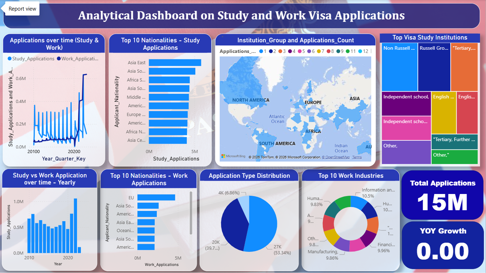
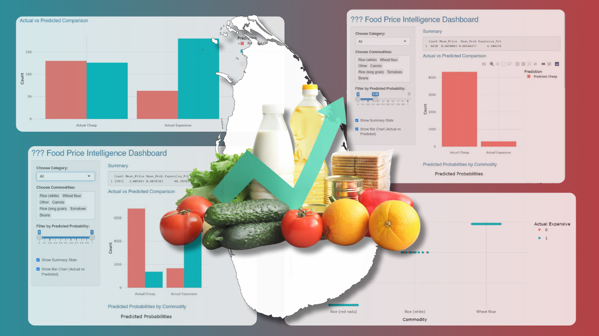
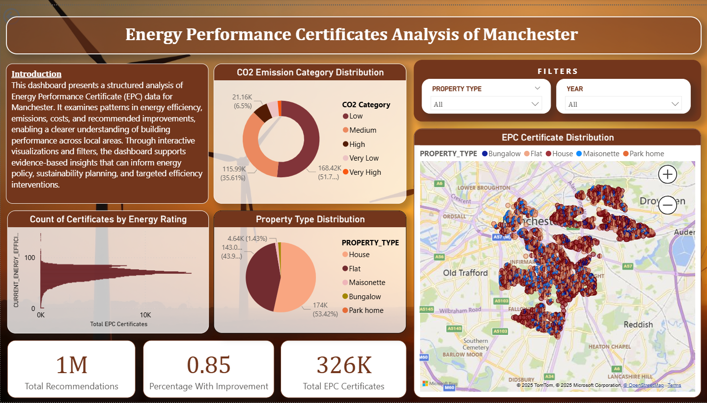
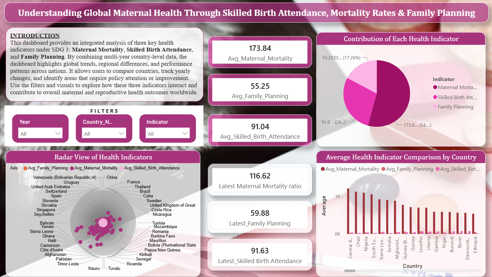

Completed
Analyzed
Focus
I am an undergraduate pursuing a BSc in Applied Data Science & Communication, passionate about transforming raw data into meaningful insights and real-world solutions. I work with Python, SQL, and machine learning techniques to analyze datasets, build predictive models, and create interactive dashboards.
I have completed several projects involving data mining, association rule analysis, and data visualization using real-world datasets. My interests lie in data analytics and machine learning, with a focus on solving practical problems through data-driven approaches.
I aspire to grow as a data scientist and contribute to impactful, insight-driven decision-making.
FEATURED PROJECTS
A curated selection of my work across data analytics, machine learning, visualization, and interactive dashboards.





